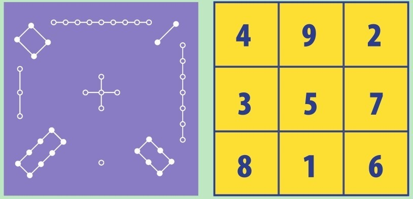
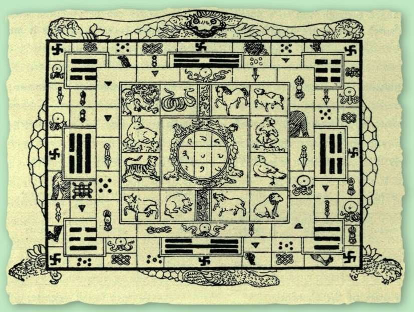
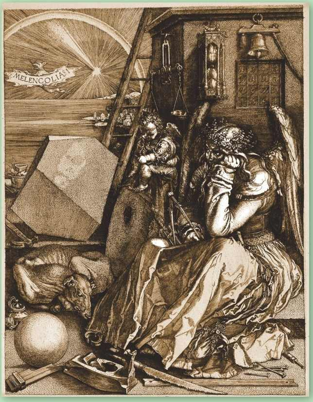
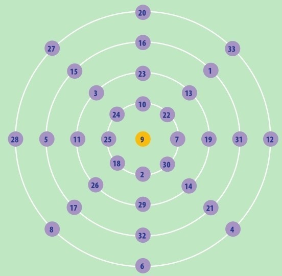
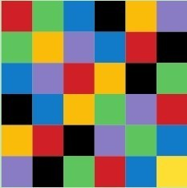
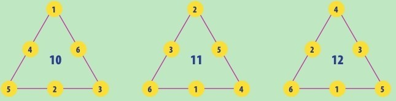

学习数学核心是要解决问题，许多数学问题以游戏或谜题的形式出现。似乎古代最多的数学谜题就是幻方。所谓神龟出水，背负幻方。
中国的《九章算术》里有最早的关于幻方的描述。它是一个3×3的方块，有9个数字或者格子，纵、横以及对角线的3个格子里的数分别加起来都得15。这个数学形象的传统名字是洛书，意思是“洛水的卷轴”，有时也称为“河图”，在4000年前禹帝统治中国时有与其相关的神话传说。

洛书上的幻方，左下图是古代中国传说里神龟壳上的版本，右下图是现代数字形式。

洛书上的幻方，这是用印度数字写的，中心装饰的是中国的地支。
洪水灾害
在某个版本的传说里，大禹王朝遭受了洪灾。大禹手下的工匠正在治水之际，一只神龟从深水中浮现。龟背上用当时中国的数字刻着3×3的方格，数字切合中国的占星术，所以龟背标记被认为是控制自然之道。
构建幻方
公元6世纪，波斯和阿拉伯的学者研究了幻方的属性。伊斯兰数学家构建了包含16、25和36个格子的幻方。10世纪，他们破解了幻方的原理，从此格子的多少没有限制了。
幻方的阶
一个幻方满足以下条件：幻方一条边上格子的数量就是幻方的阶n。对洛书上的幻方，就有n=3。1阶幻方（n=1）就是数字1自己——这不是什么难题，只是个轶事而已。n阶幻方里用到的数字是1~n2。当n=2时，这个幻方就得包含22 （2×2=4）以内的数字，但是用1、2、3、4又没法构建幻方，因此，不存在2阶幻方。当n=3或者更大（直到无穷）时，幻方总是能构建出来的。

1514年，德国艺术家阿尔布雷特·丢勒在他的画作《忧郁Ⅰ》中加入了幻方。丢勒利用数学元素绘制了栩栩如生的图画，他的幻方——其中15紧邻14表示年份——展现了他的数学造诣。这幅作品中包含了许多数学元素，但是画中忧郁的人对此全都无动于衷。据说这幅画代表了作者的思想。

幻圆
幻圆包含多层同心圆。每一圆周上的数字之和，再加上圆心数字，等于每条直径上的数字之和。

拉丁方块
拉丁方块不是用数字而是用符号或颜色组成的，每种符号或颜色在一行或一列只出现一次。

三角形的周长
三角形的每条边上的3个数加起来全相等。用1~6能以4种方式组合出来。右图是其中3种，第四种其和为9，你能构造出来吗？
幻数
洛书上的幻方中，横、纵3个格子的数字加起来得15，这正是幻方的幻数。n阶幻方的幻数可以用以下公式求出：幻数等于n（n2+1）/2。所以当n=3时，幻数就是3×（9+1）/2。你自己试算一下是否得15。你可以计算更多幻数。还有什么好玩的吗？研究数学问题的人有个有趣的消遣活动是看一些数（包括幻数）是如何用更小的数构成的。我们称这些数为合数。不是合数的数我们称为素数（又称质数），它们里面有数学的另一种魔力。
参见：
▶数字的发明，第10页
▶素数，第58页